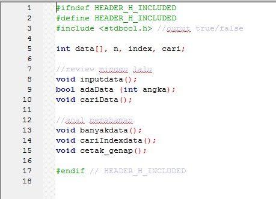
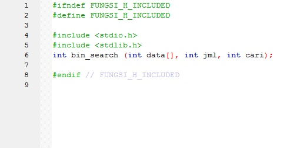
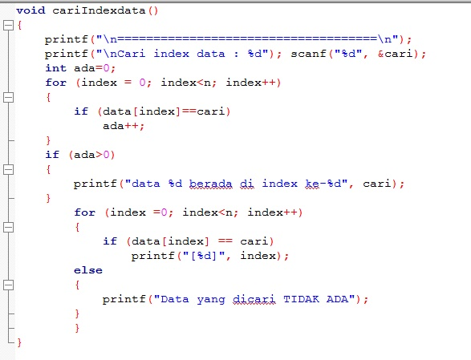
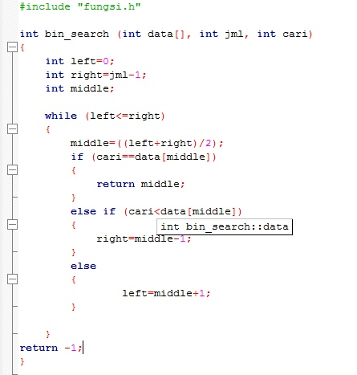
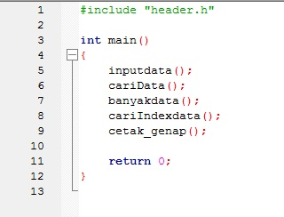
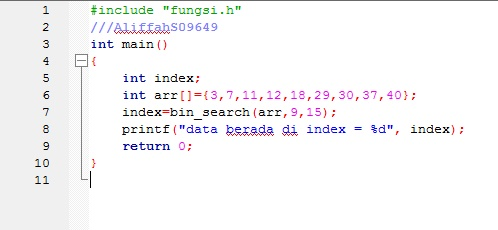

Dalam matematika dan ilmu komputer algoritma adalah urutan bilangan
atau langkah-langkah untuk penghitungan atau
untuk menyelesaikan suatu masalah
yang ditulis secara berurutan. Sehingga, algoritma pemrograman adalah urutan atau
langkah-langkah untuk menyelesaikan masalah pemrograman komputer.
Sequential Search
Binary Sort





